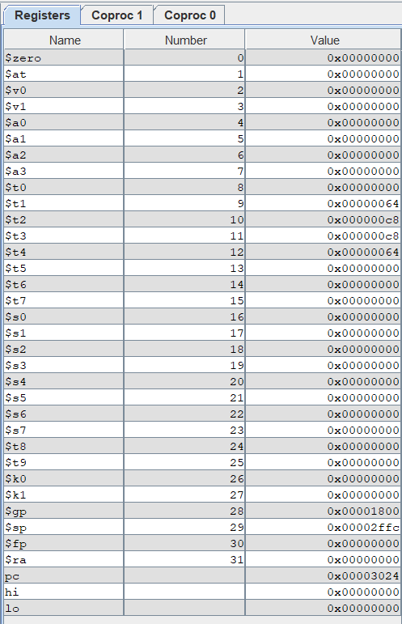
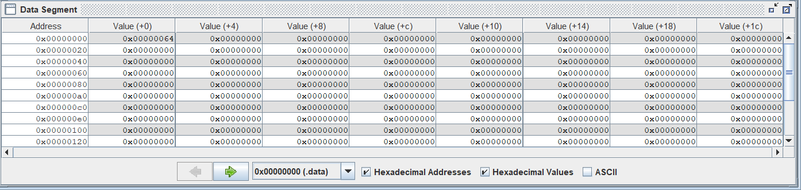
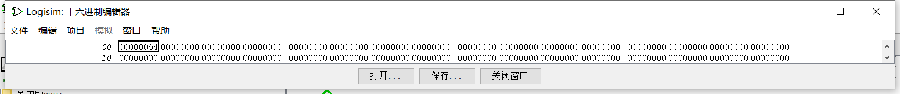
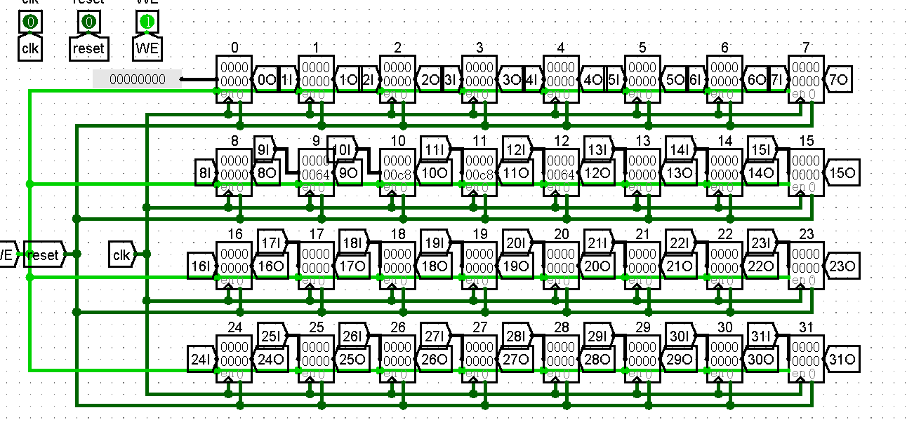
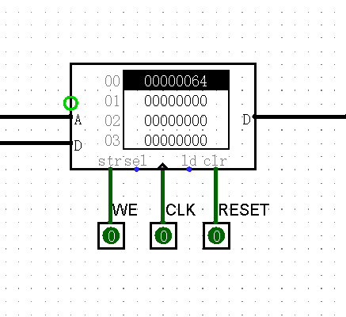
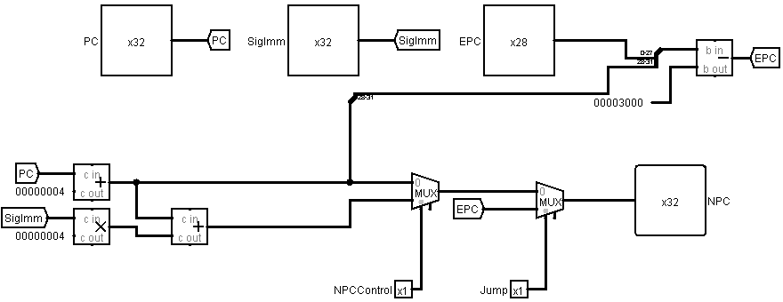
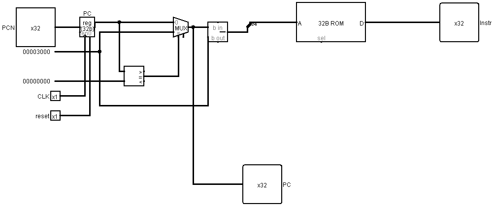

单周期CPU设计文档（Logisim）
CPU设计方案综述
（一）总体设计概述
使用Logisim设计开发一个初步的单周期CPU，总体概述如下：
- 此CPU为32位CPU
- 此CPU为单周期
- 此CPU支持的指令集为：{add, sub, addu, subu, ori, lw, sw, beq, lui, nop, j}
- nop的机器码为0x00000000
- addu,subu不支持溢出
（二）关键模块定义
1．IFU
(1) 端口说明
表 1-IFU端口说明
| 序号 | 信号名称 | 方向 | 描述 |
|---|---|---|---|
| 1 | CLK | I | 时钟信号 |
| 2 | RESET | I | 异步复位信号，将PC值置为0x00000000 0：无效 1：复位 |
| 3 | PCN[31:0] | I | PC的下一个值 |
| 4 | Instr[31:0] | O | 输出IM中将要执行的指令 |
| 5 | PC[31:0] | O | 输出当前PC值 |
(2) 功能定义
表 2-IFU功能定义
| 序号 | 功能 | 描述 |
|---|---|---|
| 1 | 复位 | 当RESET有效时，将PC值置为0x00000000 |
| 2 | 更新PC值 | PC\<=NPC |
| 3 | 输出指令 | 根据PC的值，取出IM中的指令 |
2．GRF
(1) 端口说明
表 3-GRF端口说明
| 序号 | 信号名称 | 方向 | 描述 |
|---|---|---|---|
| 1 | CLK | I | 时钟信号 |
| 2 | WE | I | 写使能信号 0：不能向GRF写入数据 1：可向GRF写入数据 |
| 3 | RESET | I | 异步复位信号 1：将所有寄存器清零 0：无效 |
| 4 | A1[4:0] | I | 5位地址输入信号，指定32个寄存器中的一个，将其中存储的数据读出到RD1 |
| 5 | A2[4:0] | I | 5位地址输入信号，指定32个寄存器中的一个，将其中存储的数据读出到RD2 |
| 6 | A3[4:0] | I | 5位地址输入信号，指定32个寄存器中的一个，将WD的数据读入到该寄存器 |
| 7 | WD[31:0] | I | 32位写入到A3所指向寄存器的数据 |
| 8 | RD1[31:0] | O | 输出A1指定的寄存器的32位数据 |
| 9 | RD1[31:0] | O | 输出A2指定的寄存器的32位数据 |
（2）功能定义
表 4-GRF功能定义
| 序号 | 功能 | 描述 |
|---|---|---|
| 1 | 异步复位 | 当RESET的值有效时，将所有寄存器异步清零 |
| 2 | 写入数据 | 当WE为1且时钟上升沿来临时，将WD写入到A3对应的寄存器 |
| 3 | 读出数据 | 将A1和A2地址对应的寄存器的值分别通过RD1和RD2读出 |
3.DM
（1）端口说明
表 5-DM端口说明
| 序号 | 信号名称 | 方向 | 描述 |
|---|---|---|---|
| 1 | CLK | I | 时钟信号 |
| 2 | WE | I | 写使能信号 0：不能向DM写入数据 1：可向DM写入数据 |
| 3 | RESET | I | 异步复位信号 0：无效 1：将DM清零 |
| 4 | A[4:0] | I | 5位读取或写入地址信号 |
| 5 | WD[31:0] | I | 32位写入数据 |
| 6 | RD[31:0] | O | 32位读出数据 |
（2）功能定义
表 6-DM功能定义
| 序号 | 功能 | 描述 |
|---|---|---|
| 1 | 异步复位 | 当RESET的值有效时，将DM清零 |
| 2 | 写入数据 | 当WE为1且时钟上升沿来临时，将WD写入A对应的地址中 |
| 3 | 读出数据 | RD时刻读出A对应地址的值 |
4.ALU
（1）端口说明
表 7-ALU端口说明
| 序号 | 信号名称 | 方向 | 描述 |
|---|---|---|---|
| 1 | SrcA[31:0] | I | 操作数1 |
| 2 | SrcB[31:0] | I | 操作数2 |
| 3 | ALUControl[2:0] | I | 决定ALU操作： 000：无符号加 001：无符号减 010：与 011：或 100：将SrcB左移10位 |
| 4 | Bigger | O | SrcA与ScrB是否相等 0：不相等 1：相等 |
| 5 | Res[31:0] | O | 输出结果 |
（2）功能定义
表 8-ALU功能定义
| 序号 | 功能 | 描述 | |
|---|---|---|---|
| 1 | 无符号加 | Res=SrcA+SrcB | |
| 2 | 无符号减 | Res=SrcA-SrcB | |
| 3 | 与 | Res=SrcA&SrcB | |
| 4 | 或 | Res=SrcA\ | SrcB |
| 5 | 将SrcB左移10位 | Res=SrcB\<\<10 |
5.NPC
（1）端口说明
表 9-NPC端口说明
| 序号 | 信号名称 | 方向 | 描述 |
|---|---|---|---|
| 1 | PC[31:0] | I | 当前PC值 |
| 2 | Jump | I | Jump选择信号 0：无效 1：指令是J |
| 3 | SignImm[31:0] | I | 扩展后的32位信号 |
| 4 | EPC[27:0] | I | 扩展后的28位信号 |
| 5l | NPCControl | I | NPCControl选择信号 0：无效 1：指令是beq |
| 6 | PCN[31:0] | O | 下一PC值 |
（2）功能定义
表 10-NPC功能定义
| 序号 | 功能 | 描述 |
|---|---|---|
| 1 | 选择是否为J指令 | 0：无效 1：是J指令 |
| 2 | 选择是否为Beq指令 | 0：无效 1：为Beq指令 |
| 3 | 输出下一PC值 | PCN为下一PC值 |
6.Control
(1) 端口说明
表 11-Control端口说明
| 序号 | 信号名称 | 方向 | 描述 |
|---|---|---|---|
| 1 | Op[5:0] | I | Instr[31:26] 6位控制信号 |
| 2 | FC[5:0] | I | Instr[0:5] 6位控制信号 |
| 3 | ALUop[2:0] | O | ALU的控制信号 |
| 4 | Jump | O | 是否为J指令 0：不是 1：是 |
| 5 | RegWrite | O | GRF的写入信号 0：禁止写入 1：允许写入 |
| 6 | MemWrite | O | DM的写入信号 0：禁止写入 1：允许写入 |
| 7 | MemToReg | O | 选择写入REG的数据 0：ALU 1：DM |
| 8 | RegDest | O | 选择A3的地址 0：Instr[20:16] 1：Instr[15:11] |
| 9 | RegSrc | O | 选择SrcB数据来源 0：GRF 1：立即数 |
| 10 | Branch | O | 是否为Beq指令 0：不是 1：是 |
（2）真值表
表 12-Control真值表
| 端口 | addu | subu | ori | lw | sw | lui | beq | J |
|---|---|---|---|---|---|---|---|---|
| Op | 000000 | 000000 | 001101 | 100011 | 101011 | 001111 | 000100 | 000010 |
| FC | 100001 | 100011 | ||||||
| ALUop | 000 | 001 | 011 | 000 | 000 | 100 | 000 | 000 |
| Jump | 0 | 0 | 0 | 0 | 0 | 0 | 0 | 1 |
| RegWrite | 1 | 1 | 1 | 1 | 0 | 1 | 0 | 0 |
| MemWrite | 0 | 0 | 0 | 0 | 1 | 0 | 0 | 0 |
| MemToReg | 0 | 0 | 0 | 1 | 0 | 0 | 0 | 0 |
| RegDest | 1 | 1 | 0 | 0 | 0 | 0 | 0 | 0 |
| RegSrc | 0 | 0 | 1 | 1 | 1 | 1 | 0 | 0 |
| Branch | 0 | 0 | 0 | 0 | 0 | 0 | 1 | 0 |
表 12-Control真值表（续）
| 端口 | add | sub | ||||||
|---|---|---|---|---|---|---|---|---|
| Op | 000000 | 000000 | ||||||
| FC | 100000 | 100010 | ||||||
| ALUop | 000 | 001 | ||||||
| Jump | 0 | 0 | ||||||
| RegWrite | 1 | 1 | ||||||
| MemWrite | 0 | 0 | ||||||
| MemToReg | 0 | 0 | ||||||
| RegDest | 1 | 1 | ||||||
| RegSrc | 0 | 0 | ||||||
| Branch | 0 | 0 |
测试方案
（1）测试代码
ori $t1 , $t2 , 100
addu(add) $t2 , $t1 , $t1
subu(sub) $t3 , $t2 , $t1
sw $t3 , 0($0)
lw $t4 , 0($0)
nop
Label:
beq $t3 , $t2 , Label_End
addu $t3 , $t3 , $t1
j Label
Label_End:
（2）MARS中运行结果


（3）该CPU运行结果



思考题
（一）上面我们介绍了通过 FSM 理解单周期 CPU 的基本方法。请大家指出单周期 CPU 所用到的模块中，哪些发挥状态存储功能，哪些发挥状态转移功能。
答：状态存储：DM,GRF
状态转移：IFU,NPC,EXT,ALU,Control
（二）现在我们的模块中IM使用ROM， DM使用RAM， GRF使用Register，这种做法合理吗？ 请给出分析，若有改进意见也请一并给出。
答：合理
IM是指令单元，指令在程序执行过程中不会再更改，也不应该被更改，也就是应只读，ROM就是只具有读取功能的存储器，满足要求
DM是存储单元，在程序的执行过程中需要不断地向DM中存入，读出数据，所以具有读入与读出的RAM满足要求
之所以DM不选择寄存器的原因是寄存器相比RAM是昂贵的，且DM需要存储大量数据，采用寄存器会导致成本成倍增长，得不偿失。
GRF为寄存器堆，自然选择32个寄存器去实现32个寄存器，符合要求与逻辑
没有改进意见
（三）在上述提示的模块之外，你是否在实际实现时设计了其他的模块？如果是的话，请给出介绍和设计的思路。
答：是，设计了NPC模块，介绍：NPC模块是用于计算PC的下一值的集成式计算中心，它包容了Beq j等跳转指令的计算，使得对于PC下一值的处理整体而思路清晰。设计思路：首先NPC作为计算PC下一值的模块最基本的功能就是PC\<=PC+4，这个是首要实现的功能，接着就是想办法实现BEQ,J等跳转指令的功能，结合BEQ和J等指令的机器码，将其有用的部分输入进NPC当中进行计算就可得到当前指令若为BEQ和J，它们的值分别为多少，但这里就涉及到了选择的问题，NPC如何知道提供给PC的下一值是PC+4,还是BEQ的跳转，还是J的跳转？因而就需引入多路选择器，并辅以控制选择信号（Conrtol部分生成）来选择PC的下一值，由于有3个选择，我这里采用了2个多路选择器，先二选一，再加入另一个再二选一，具体如图：

（四）事实上，实现nop空指令，我们并不需要将它加入控制信号真值表，为什么？请给出你的理由
答：nop为空指令，不会进行任何操作，仅仅占用一个指令而使得PC\<=PC+4，所以不管加不加都不会影响它的效果
（五）上文提到，MARS 不能导出 PC 与 DM 起始地址均为 0 的机器码。实际上，可以避免手工修改的麻烦。请查阅相关资料进行了解，并阐释为了解决这个问题，你最终采用的方法。
答：其实经过研究发现，在我目前所添加的指令中，PC所影响的指令就是J指令，因为J指令是直接跳转到地址，BEQ算的是偏移量，但为了修改方便，我还是针对PC进行了修改，而不是对J指令那一路进行修改，起始时首先PC应该复位为0x3000而且保证该周期正常取指，所以选择了多路选择器，在第一周期屏蔽PC的影响，直接取0位置处的地址（利用PC起始为0与0相等），在第二周期PC被成功赋值后再由PC决定取指，之后就简单了，每次PC的值作用于ROM时都先减去0x3000即可。实现如图：

（六）阅读 Pre 的 “MIPS 指令集及汇编语言” 一节中给出的测试样例，评价其强度（可从各个指令的覆盖情况，单一指令各种行为的覆盖情况等方面分析），并指出具体的不足之处。
答：测试样例反汇编为：1
2
3
4
5
6
7
8
9
10
11
12
13
14
15
16
17
18
19
20
21
22
23
24
25
26
27
28lui $t0, 0x1
ori $t0, $t0, 0x2f6a
ori $a0, $0, 0x4
ori $a1, $0, 0x1
ori $a2, $0, 0x4
ori $a3, $0, 0x20
sw $a3, 0x0($0)
lw $t2, 0x0($0)
sw $t0, 0x0($a0)
subu $t1, $t0, $t2
addu $a0, $a0, $a2
sw $a1, 0x0($a0)
addu $a0, $a0, $a2
addu $a1, $a1, $a1
sw $a1, 0x0($a0)
addu $a0, $a0, $a2
addu $a1, $a1, $a1
sw $a1, 0x0($a0)
addu $a0, $a0, $a2
addu $a1, $a1, $a1
sw $a1, 0x0($a0)
addu $a0, $a0, $a2
addu $a1, $a1, $a1
sw $a1, 0x0($a0)
addu $a0, $a0, $a2
addu $a1, $a1, $a1
sw $a1, 0x0($a0)
beq $a3, $a1, label_1
首先肯定的是所有的要求实现的指令至少都出现了一次进行了测试（虽然要实现的是add和sub这里是addu和subu，但是由设计要求可知在这里add和addu等价，subu和sub等价），且除了Beq以外都测试了多次，提升了检测出Bug的概率，强度还是有的，但放到Logisim跑了一遍和观察汇编指令发现，全程并无负数出现，也就是只测试了正数，且正数不大，数据覆盖范围比较窄，同时发现检测的寄存器是固定的几个，寄存器检测范围比较窄，对于beq则没有检测原地跳，向后跳，只是检测了向前跳。跳转范围检测比较窄。